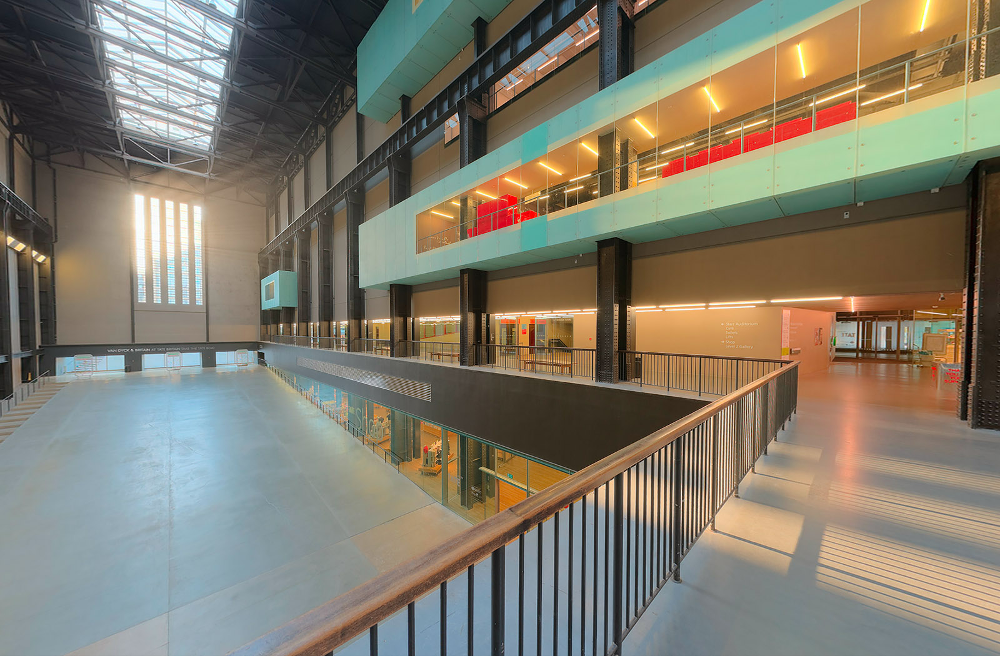

釀酒廠時尚升級 Prada 基金會
本月企劃 工業遺產再利用

工業遺產再利用案例
歐洲｜日本
台灣工業遺產選粹
「活」的鐵道博物館

英國工業遺產的前世今生
全世界都在擁抱這個工業遺產再利用的黃金時代。很難想像倫敦泰特當代美術館曾是一個被廢棄的發電廠。歷時6年，耗資2.6億英鎊，泰特當代美術館的擴建被認為是自大英圖書館擴建以來英國最重要的文化藝術建築投資。

劇場人的城南散步
人與生活是創作的來源，在城南看似平凡的食衣住行，一個轉身或仰頭，就能看見故事的痕跡。
舊建築再生「文學即生活」
擁有百年風華，前身為「台南州廳」的台灣文學館是近年來古蹟修復再利用的重要範例。
重現浴場百年風貌
「一封陳情書，改變一座百年浴場的未來。」，沒有這封陳情書，就沒有現在的北投溫泉博物館。